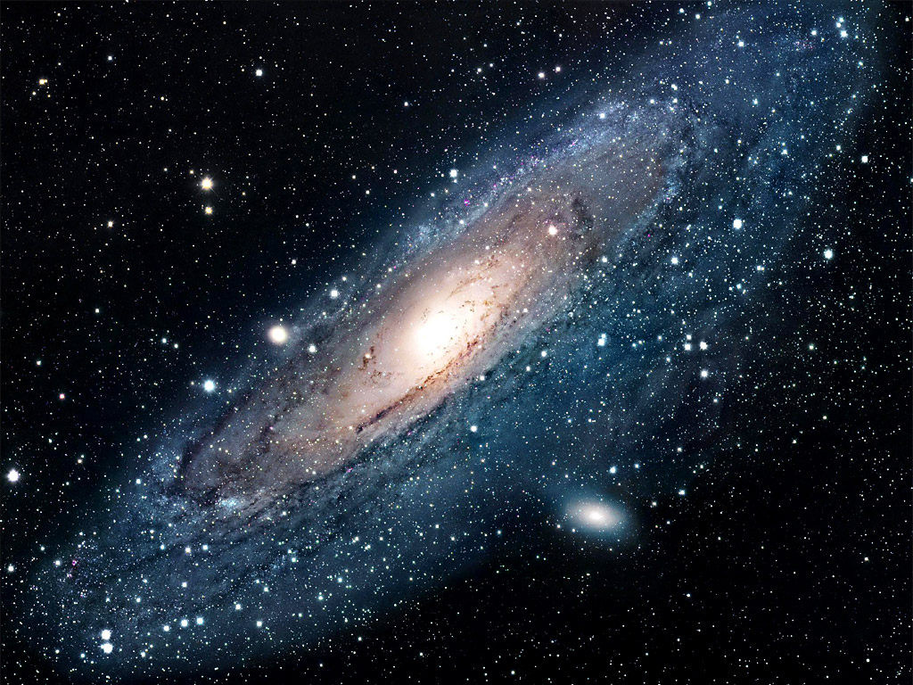
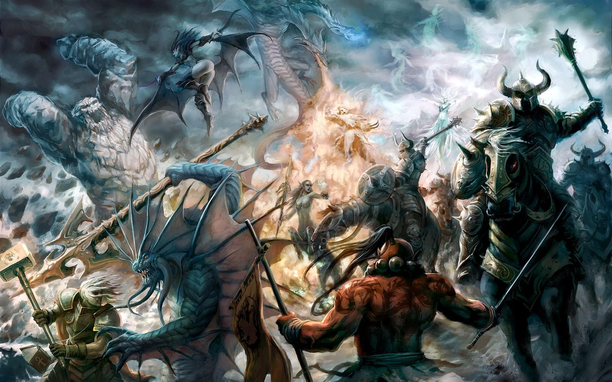
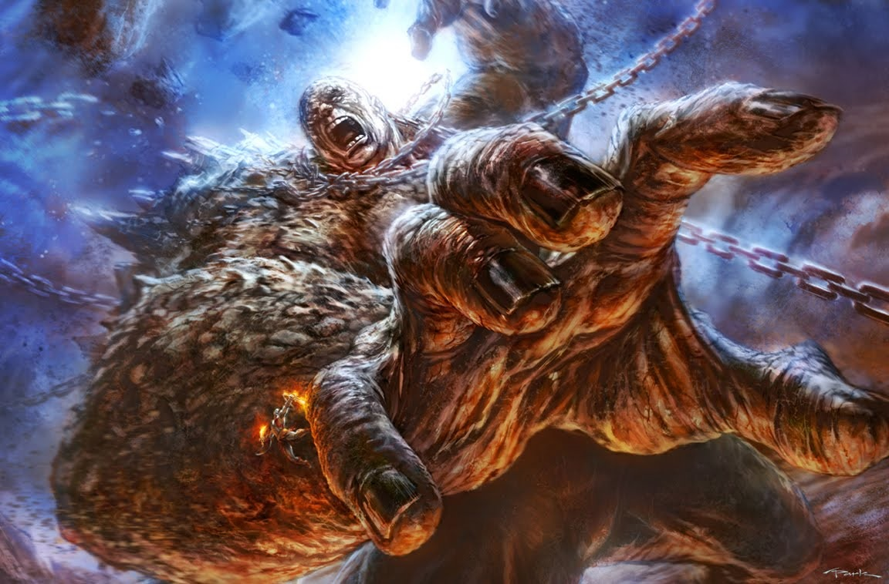

Au Commencement ...

Au commencement était Chaos. Rien ne l’avait préfiguré. Il avait juste surgi ainsi, sans forme, sans bruit, sans éclat, et d’une taille infinie. Des milliers d’années de sommeil s’écoulèrent avant qu’inopinément Chaos donne le jour à Gaïa, la Terre. Gaïa était féconde et elle enfanta un oeuf d’où jaillit Éros, la pulsion de l’amour. Dieu non incarné, Éros circula dans l’univers, invisible, impalpable, mais répandant partout ses pulsions amoureuses. Engendrer des divinités avait ravi Chaos. Il ne s’arrêta donc pas en chemin et créa Érèbe, les Ténèbres, et Nyx la Nuit. Tous deux ne tardèrent pas à s’accoupler pour enfanter Aither, l’Éther, qui monta surplomber l’univers, et Hemare, la Lumière, qui entreprit de l’éclairer. Cependant, les Ténèbres et la Nuit se chamaillaient. Ils détestaient leurs enfants et s’en éloignèrent rapidement. Dès qu’apparaissaient l’Éther et la Lumière, aussitôt les Ténèbres et la Nuit déguerpissaient, et lorsqu’ils se décidaient à revenir, c’était au tour des autres de s’en aller.
Gaïa, de son côté, continuait d’enfanter. Apparurent ainsi Ouranos, le Ciel, qui prit position au-dessus de sa tête, Ouréa, les Montagnes, qui s’installèrent à son flanc, Pontos, l’Eau qui ruissela sur son corps. Un quatrième resta dissimulé dans le giron de sa mère : Tartare, le monde souterrain des cavernes. Ciel, mer, montagne, monde souterrain, Gaïa était désormais à la fois déesse et planète parfaite. Mais elle était toujours loin d’être stérile et son panthéon n’était pas encore au complet. Avec son premier fils Ouranos, elle mit au monde douze Titans, trois Cyclopes et trois Hécatonchires, géants aux cinquante têtes et aux cent bras. Mais lorsque Ouranos prit conscience qu’il n’était qu’un jouet entre les bras de sa mère, il refusa son rôle de père, méprisa et emprisonna Titans et Cyclopes dans le monde d’en bas, le Tartare.
Furieuse, Gaïa forgea une serpette acérée qu’elle tendit à ses enfants qui la taraudaient depuis leurs souterrains. À eux de tuer leur dément de père pour se libérer. Mais tous redoutaient par trop leur géniteur pour oser agir. Plutôt se languir dans les geôles qu’encourir le châtiment du Ciel. Seul Chronos, le benjamin des Titans, tendit la main vers la serpette. Il survint tandis qu’Ouranos prenait de force sa mère Gaïa, s’empara du sexe de son père, le trancha et le jeta à la mer. Ouranos hurla de douleur, s’éloigna le plus haut possible, y resta épouvanté par le crime commis par son propre enfant qu’il s’empressa de maudire : « Celui-là qui a osé porter la main sur son procréateur, celui-là sera à son tour frappé par son propre fils. » Après tant de naissances et de violences, Ouranos le Ciel et Gaïa la Terre se séparèrent à jamais. Et arriva alors l’heure du règne de Chronos, dieu du Temps.
La Guerres des Titans

Chronos s’étant débarrassé de son père, Ouranos, en le castrant, s’empara de son trône. Ce dernier, éloigné de la Terre, se manifestait juste en faisant tomber la pluie de manière sporadique. Quant à Gaïa, la Terre sa mère, elle entreprit de se choisir un autre amant parmi sa progéniture et jeta son dévolu sur Pontos, l’Eau. Ensemble, ils donnèrent le jour à une multitude de créatures aquatiques. Les Titans se livrèrent également à des relations incestueuses sur la personne de leurs soeurs. L’aîné, Oceanos, créa avec Téthys trois mille filles qui furent autant de sources, de fleuves et de rivières. Nyx engendra pêle-mêle Hypnos le sommeil, Thanatos la mort, Éris la discorde, Némésis la colère.
Chronos se lia pour sa part avec sa soeur Rhéa, épousailles dont naquirent Hestia, Héra, Déméter, Hadès et Poséidon. Cependant, se remémorant que son père l’avait maudit en lui annonçant qu’il serait lui aussi détrôné par ses enfants, il entreprit de les dévorer dès leur naissance. Irritée par tant d’exactions, Rhéa se terra en Crète pour y accoucher de son sixième rejeton : Zeus. Elle suivit les conseils de Gaïa, sa mère, qui lui souffla un piège. Elle devait tendre à Chronos une pierre enveloppée d’un lange en prétendant qu’il s’agissait là de leur nouveau-né. La pierre fut aussitôt gobée par le naïf géniteur.
Rescapé grâce à ce stratagème, Zeus grandit dans une grotte, choyé par les Nymphes qui chantaient autour de lui chaque fois qu’il lui prenait l’envie de vagir, cris et pleurs qui auraient pu faire dresser l’oreille à Chronos. Zeus parvint ainsi à l’âge adulte. Il proposa alors à son père un très tentant breuvage alcoolisé, non sans l’avoir additionné d’un redoutable vomitif. La ruse réussit. En même temps que la pierre langée, Chronos rejeta ses cinq premiers enfants. Et avant qu’il n’ait pu réagir, Zeus, Hestia, Déméter, Poséidon et Hadès se réfugièrent en haut du mont Olympe.
Pour sa vengeance, Chronos appela à l’aide ses frères et soeurs les Titans. La guerre des Immortels fit rage entre l’ancienne garde et la nouvelle. Les Titans, plus expérimentés, eurent d’abord le dessus mais l’un d’entre eux, Prométhée, prit le parti de Zeus et lui prodigua ses conseils. Il lui dit d’appeler à ses côtés les Cyclopes à l’oeil unique et les Hécatonchires aux cent bras. Tous s’avérèrent d’excellents alliés. À Zeus, ils offrirent le tonnerre, l’éclair et la foudre, à Poséidon le trident, à Hadès le casque de l’invisibilité. La lutte se poursuivit jusqu’à la victoire décisive de ceux de l’Olympe. Les Titans vaincus furent enchaînés au plus profond du monde d’en bas du Tartare. Chronos le père eut le privilège pour sa part de n’être que banni sur l’île des Bienheureux.
Le Règne des Olympiens

Après le règne du dieu Chaos et celui de Chronos, le dieu du Temps, advint l’ère des dieux olympiens. Zeus, nouveau maître du monde, répartit les rôles et les honneurs en fonction du zèle mis par ses frères et soeurs à le seconder dans sa lutte contre les Titans. À Poséidon, le contrôle des mers. À Hadès, le royaume des Morts. À Déméter, les champs et les moissons. À Hestia le feu. À Héra la famille, etc. Le partage fait, Zeus aménagea son palais au sommet du mont Olympe et annonça que s’y tiendraient tous les rendez vous des dieux où se déciderait le sort de l’univers.
Cependant, sa mère Gaïa s’irrita de la nouvelle prédominance de son fils et donna la vie à un monstre affreux : Typhon. Celui-ci était doté de cent têtes de dragon crachant des flammes. Il était d’une telle stature que le moindre de ses mouvements suscitait une tempête. Et quand il se montra sur l’Olympe, les dieux furent si épouvantés qu’ils prirent l’apparence d’animaux et coururent se cacher dans le désert d’Égypte. Zeus resta donc seul à affronter Typhon.
Le monstre vainquit le roi des dieux. Il lui coupa les nerfs et les tendons et l’emporta dans une caverne. Cependant Hermès, jeune dieu espiègle rallié aux Olympiens, se munit du casque d’invisibilité d’Hadès grâce auquel il put libérer Zeus. Il remit en place nerfs et tendons et ramena le roi sur l’Olympe. Typhon revint à la charge mais cette fois, de son sommet, Zeus le frappa de sa foudre. Le monstre détacha des pans de montagne pour les projeter vers la cime mais Zeus de ses éclairs les réduisit en morceaux qui retombèrent, écrasant Typhon. Zeus put alors l’enchaîner et le jeter dans le cratère du volcan Etna où parfois il se réveille et crache de nouveau le feu.